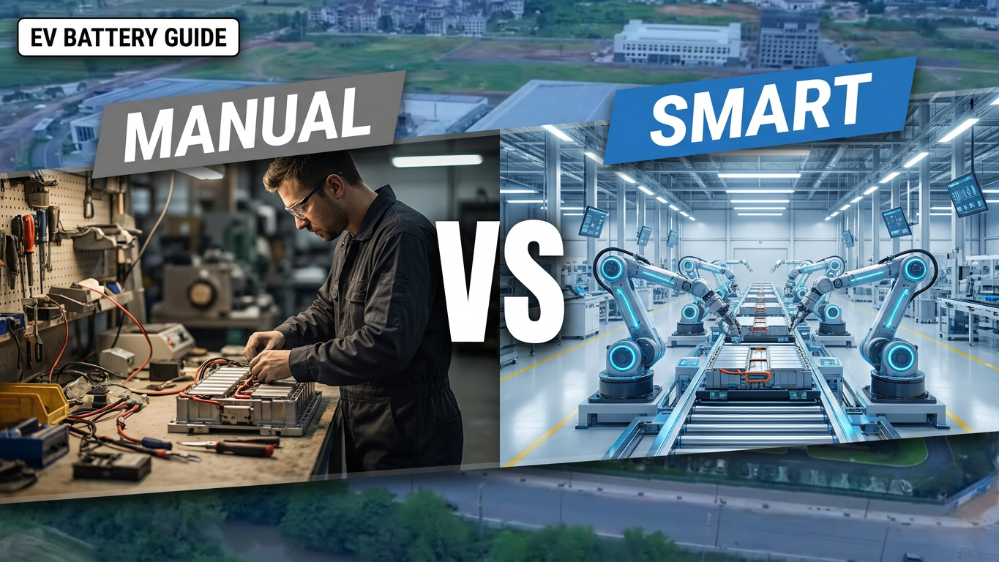

Battery Manufacturing Automation: Manual Production vs Smart Battery Factory | Which Model Creates Better ROI?
Why Battery Manufacturers Are Moving Toward Smart Factory Automation The global demand for electric vehicles, energy storage systems, and industrial batteries continues to increase rapidly. As battery production scales up, manufacturers face a critical decision: Should they continue expanding manual production, or invest in a fully automated smart battery factory? Traditional manual production may appear attractive because of lower initial investment. However, as production volume increases, companies often experience: Rising labor costs Inconsistent product quality Lower production efficiency Difficult process control Limited scalability A smart battery factory uses automation technology to connect the entire manufacturing process, including: Material handling Electrode production Cell assembly Welding Formation Testing Sorting Intelligent warehousing This article compares manual battery production and automated battery manufacturing from a business perspective, helping investors and factory managers understand which solution provides better long-term value.

Summary
Why Battery Manufacturers Are Moving Toward Smart Factory Automation
The global demand for electric vehicles, energy storage systems, and industrial batteries continues to increase rapidly.
As battery production scales up, manufacturers face a critical decision:
Should they continue expanding manual production, or invest in a fully automated smart battery factory?
Traditional manual production may appear attractive because of lower initial investment.
However, as production volume increases, companies often experience:
Rising labor costs
Inconsistent product quality
Lower production efficiency
Difficult process control
Limited scalability
A smart battery factory uses automation technology to connect the entire manufacturing process, including:
Material handling
Electrode production
Cell assembly
Welding
Formation
Testing
Sorting
Intelligent warehousing
This article compares manual battery production and automated battery manufacturing from a business perspective, helping investors and factory managers understand which solution provides better long-term value.
Technology
- Smart Battery Factory Automation Technology
- A modern automated battery factory integrates multiple technologies to create a connected manufacturing environment.
- 1. Automated Production Equipment
- The production line includes:
- 1.1 Electrode Manufacturing Automation
- Slurry Mixing System
- Coating Machine
- Calendaring System
- Tab Cutting Machine
- Automation improves:
- Material consistency
- Production stability
- Process accuracy
- 1.2 Cell Assembly Automation
- Including:
- Winding Machine
- Hot Pressing System
- Ultrasonic Welding
- Laser Welding
- Benefits:
- Higher precision
- Faster production speed
- Reduced human interference
- 2. Automated Material Handling
- Battery factories require continuous movement of:
- Raw materials
- Electrode sheets
- Semi-finished cells
- Finished batteries
- Automation solutions include:
- Conveyor systems
- AGV/AMR transportation
- Automated storage systems
- 3. Intelligent Quality Control
- Smart factories integrate:
- Automated inspection
- Production monitoring
- Data collection
- Traceability systems
- This helps manufacturers identify problems quickly and improve product reliability.
- 4. ASRS Smart Warehouse Integration
- A complete automated factory connects production with warehouse operations.
- ASRS systems provide:
- Automated storage
- Inventory management
- Space optimization
- Faster material retrieval
Challenge
Why Traditional Battery Manufacturing Faces Increasing Pressure
Many battery manufacturers begin production with partially manual processes.
This approach may work during the early stage, but creates challenges as demand increases.
1. Increasing Labor Dependency
Manual production requires more workers when output increases.
Problems include:
Higher labor costs
Difficult workforce management
Training requirements
Production instability
2. Quality Consistency Challenges
Battery manufacturing requires extremely high precision.
Manual operations may create variations in:
Assembly accuracy
Welding quality
Material handling
Inspection results
Even small variations can affect battery performance and reliability.
3. Limited Production Scalability
Manual production has physical limitations.
When customers require:
Higher output
Faster delivery
Larger orders
companies must add more labor and production space.
4. Poor Production Visibility
Traditional factories often lack real-time information about:
Equipment status
Production efficiency
Quality problems
Material flow
This makes optimization difficult.
Solution
Building a Smart Battery Factory Through Integrated Automation
The solution is not simply replacing workers with machines.
The goal is creating a connected manufacturing system where production, logistics, and data work together.
1. Automate Critical Manufacturing Processes
Automation can be introduced into:
Electrode production
Cell assembly
Welding
Testing
Packaging
This improves:
Accuracy
Repeatability
Production speed
2. Connect Production Equipment
A smart factory integrates different processes into one workflow.
Example:
Slurry Mixing
↓
Coating
↓
Calendaring
↓
Winding
↓
Assembly
↓
Testing
↓
Storage
3. Implement Intelligent Material Flow
Automated logistics systems reduce unnecessary manual transportation.
Solutions include:
Conveyor systems
AMR/AGV systems
ASRS warehouses
4. Create Data-Driven Manufacturing
Smart factories collect production data to improve:
Process control
Maintenance planning
Quality management
Workflow & Layout
Manual Production vs Smart Battery Factory Workflow Comparison
Traditional Manual Production Workflow
Material Preparation
↓
Manual Transportation
↓
Manual Machine Operation
↓
Manual Inspection
↓
Manual Storage
↓
Manual Inventory Management
Common Problems
More human dependency
Longer transportation time
Higher error risk
Limited production visibility
Smart Battery Factory Workflow
Automated Material Preparation
↓
Automated Production Equipment
↓
Intelligent Transportation
↓
Automated Inspection
↓
Production Data Management
↓
ASRS Storage
Advantages
Continuous production flow
Better process control
Higher efficiency
Scalable operation
Results & ROI
- Business Benefits of Battery Manufacturing Automation
- Automation creates value beyond labor savings.
- 1. Higher Production Efficiency
- Automated systems improve:
- Production speed
- Equipment utilization
- Manufacturing consistency
- Companies can increase output without proportional workforce expansion.
- 2. Lower Operating Costs
- Automation reduces:
- Manual handling requirements
- Production interruptions
- Quality-related losses
- 3. Improved Battery Quality
- Precision automation helps maintain:
- Stable production parameters
- Better product consistency
- Reduced defect rates
- 4. Faster Production Expansion
- Smart factory systems allow companies to expand capacity through:
- Additional production modules
- Automated logistics upgrades
- Factory optimization
- 5. Better Manufacturing Management
- Digital production systems provide:
- Real-time monitoring
- Production analysis
- Quality traceability
Equipment List
- Smart Battery Factory Automation Equipment
- 1. Battery Production Equipment
- Slurry Mixing System
- Coating Machine
- Calendaring Machine
- Tab Cutting Machine
- Winding Machine
- Hot Pressing Machine
- Ultrasonic Welding Machine
- Laser Welding Machine
- 2. Testing & Quality Equipment
- Baking System
- Electrolyte Injection Machine
- Formation System
- Capacity Grading System
- Battery Testing Machine
- Automatic Sorting Machine
- 3. Automation Equipment
- Conveyor System
- Automated Material Handling System
- AMR/AGV System
- Industrial Robot System
- 4. Warehouse Automation
- ASRS Storage System
- Warehouse Management System
- Automated Retrieval System
Project Overview / Opening
Why Smart Battery Factories Are Becoming the Future of Manufacturing
Battery manufacturing is becoming one of the most competitive industries worldwide.
Companies are no longer competing only through production capacity.
They are competing through:
Manufacturing efficiency
Product quality
Delivery speed
Production flexibility
A traditional factory model based mainly on manual operation faces increasing pressure.
Smart battery factories provide a new approach by connecting:
Production equipment
Automation
Data management
Intelligent logistics
This creates a manufacturing platform capable of supporting future market growth.
Key Points
- Key Factors When Upgrading to Smart Battery Manufacturing
- 1. Automation Should Follow Business Goals
- Not every factory requires the same automation level.
- The right solution depends on:
- Production volume
- Product requirements
- Investment strategy
- 2. Focus on Complete Process Integration
- A single automated machine does not create a smart factory.
- Real value comes from connecting:
- Production
- Logistics
- Quality
- Data
- 3. Reduce Long-Term Operational Risk
- Automation helps companies reduce dependency on:
- Labor availability
- Manual processes
- Production variation
- 4. Plan Automation for Future Growth
- A scalable system allows:
- Capacity expansion
- New product introduction
- Technology upgrades
Implementation / Workflow
How to Upgrade From Manual Production to Smart Battery Factory
Step 1: Evaluate Current Manufacturing Process
Analyze:
Existing equipment
Production bottlenecks
Labor requirements
Quality issues
Step 2: Identify Automation Opportunities
Review:
Production processes
Material movement
Warehouse operations
Step 3: Develop Automation Strategy
Create:
Equipment upgrade plan
Production layout
Integration solution
Step 4: Implement Automation Systems
Install:
Automated machines
Material handling systems
Control systems
Step 5: Optimize Production Performance
Improve:
Production efficiency
Quality stability
Equipment utilization
Customer Value / Results
Helping Battery Manufacturers Build More Competitive Factories
A smart battery factory solution helps customers achieve:
Reduced Labor Dependency
Automation reduces reliance on manual operations and creates more stable production capacity.
Higher Production Reliability
Integrated automation improves:
Process consistency
Product quality
Manufacturing control
Better Investment Return
Companies can achieve better ROI through:
Higher productivity
Lower operating costs
Reduced production losses
Future-Ready Manufacturing Capability
Smart factories support:
EV battery growth
ESS market expansion
Industrial battery applications
Professional Automation Integration Support
We help customers evaluate:
Existing factory conditions
Production requirements
Automation opportunities
And develop suitable manufacturing solutions.
Conclusion / Next Step
Build a Smarter Battery Factory With Integrated Automation Solutions
The transition from manual production to smart battery manufacturing is becoming an important strategy for companies seeking long-term competitiveness.
We provide complete battery manufacturing automation solutions, including:
√ Battery production line planning
√ Automation equipment integration
√ Individual workstation supply
√ Material handling solutions
√ ASRS intelligent warehouse systems
√ Factory automation upgrades
Whether you are building a new EV battery factory or improving an existing production facility, our engineering team can help analyze your manufacturing requirements and develop a suitable automation solution.
Visit our Contact page and submit your project inquiry with details including:
→ Battery type
→ Current production situation
→ Target capacity
→ Factory requirements
We will work with you to discuss the appropriate battery manufacturing automation strategy and project implementation plan.
SEO Title
Battery Manufacturing Automation: Manual Production vs Smart Battery Factory | Which Model Creates Better ROI?
SEO Description
Why Battery Manufacturers Are Moving Toward Smart Factory Automation
The global demand for electric vehicles, energy storage systems, and industrial batteries continues to increase rapidly.
As battery production scales up, manufacturers face a critical decision:
Should they continue expanding manual production, or invest in a fully automated smart battery factory?
Traditional manual production may appear attractive because of lower initial investment.
However, as production volume increases, companies often experience:
Rising labor costs
Inconsistent product quality
Lower production efficiency
Difficult process control
Limited scalability
A smart battery factory uses automation technology to connect the entire manufacturing process, including:
Material handling
Electrode production
Cell assembly
Welding
Formation
Testing
Sorting
Intelligent warehousing
This article compares manual battery production and automated battery manufacturing from a business perspective, helping investors and factory managers understand which solution provides better long-term value.
Related Blog
Start with Your Business Challenge
Tell us about your warehouse, factory, or production requirements. We'll help you explore practical automation solutions and relevant project references.